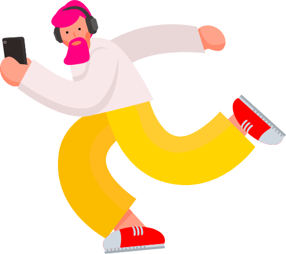
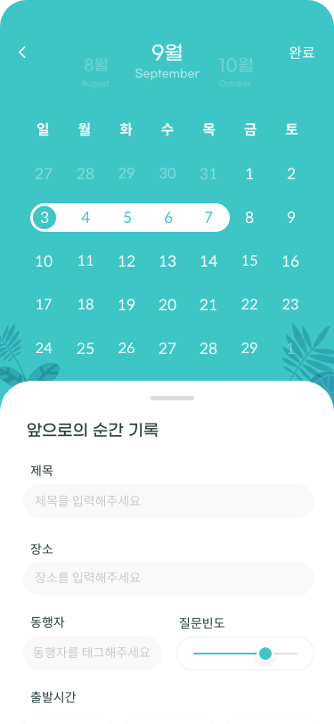
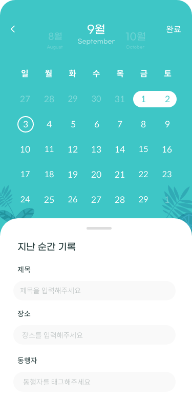

본 페이지는 모바일 페이지입니다.
웹 페이지를 통해 직접 인터랙션 체험하시는 것을 권장합니다.
모먼트립이
필요한 사람들은?

- 추억을 잊고 사는 사람들
-
요즘 일명 '타임푸어'인 사람들이 늘어나고 있습니다.
요즘 일명 '타임푸어'인 사람들이 늘어나고 있습니다. 바쁜 일상 때문에 시간이 부족한 탓에 여행 마저도 일 이라고 생각하는 사람들이 늘어나고 있습니다. 또한 그 여행 속에서의 추억, 순간 마저도 바쁜 일상 탓에 잊고 살게 됩니다.
당신은 어떤 기록을 하고 싶나요?

- 여행을 더욱 소중하고 특별하게
-
여행에 대한 갈증을 지난 날의 추억 회상으로 풀어가는 사람들이 늘어나고 있습니다. 과거 여행지에서 남긴 사진, 편지, 기록 등은 답답한 마음을 해소 시켜줍니다.
순간을 생생하게 기록하는
모먼트립과
여행을 떠나볼까요?


-
지난순간의 기록,
앞으로의 순간 기록 -
당일을 기준으로 이전, 이후 날짜를 선택하면 순간에 대한 기록을 시작할 수 있습니다.